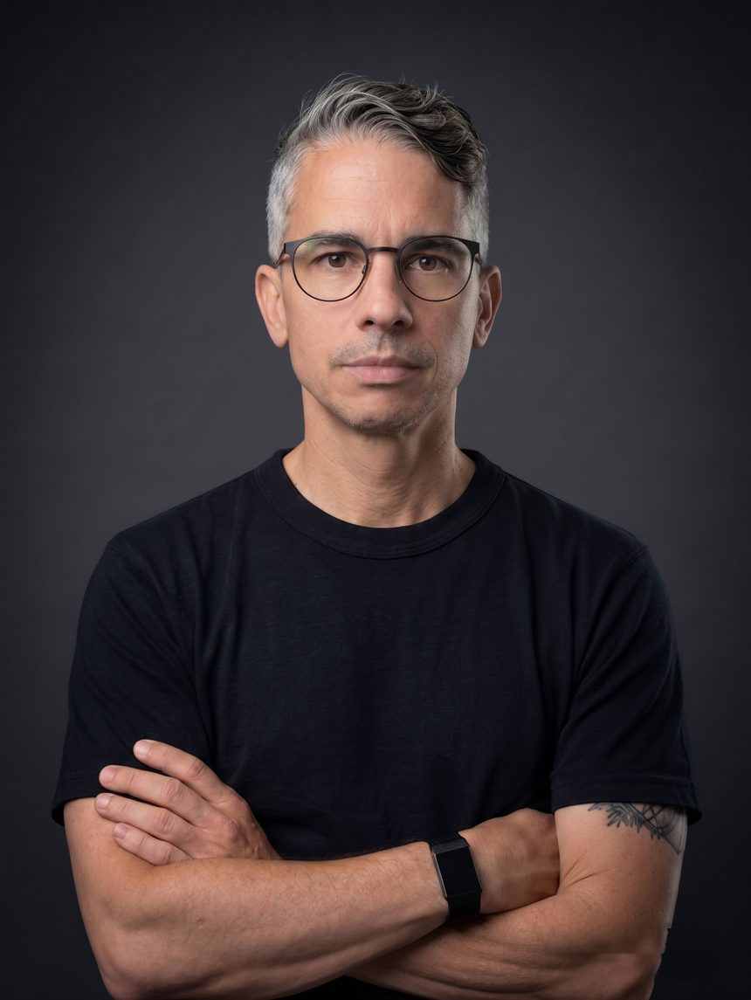

i.
Dynamic Capabilities
How firms sense, seize, and transform — and why so few sustain it. Reading Teece against the grain of real organisations.
Teece · Pisano · Shuen
Between disciplines, sectors, and people who don't yet know they need each other. I'm a network weaver — connecting ideas, organisations, and people across the boundaries where value actually gets created.
My brother once told me I was a network weaver. I had no name for it then — but looking back, it explains everything.
I first fell in love with Granovetter's research on weak and strong ties — the idea that the relationships we take least seriously are often the ones carrying the most valuable knowledge. I built a business consultancy around it, called it Innovetter (Innovation + Granovetter), and designed a framework called Ties Builder to help organisations and individuals to map and activate the connections that actually drive change. The theory felt true because I'd lived it: the breakthroughs I'd seen never happened inside a single team or discipline. They happened between them.
That's the thread running through nearly two decades of work across entrepreneurship, digital technologies, deep tech, and venture building in many industries — in the UK, Brazil, and the Middle East. I sit at the intersection of thinker and doer: I care about the ideas, and I care equally about what happens when they meet reality. The projects that excite me most are the ones where I have to figure it out — where the challenge is at the edge of what I know. That's the signal.
That conviction eventually became a PhD. My research is on venture-supporting innovation intermediaries in resource-constrained ecosystems, how they generate value — from the inside: my day job is Principal Innovation Solutions Consultant at Digital Catapult, itself an innovation intermediary. Theory and practice inform each other daily. I write to close the distance between them — strategic management ideas made clear, built for practitioners, with people and their connections at the centre of everything.

How firms sense, seize, and transform — and why so few sustain it. Reading Teece against the grain of real organisations.
Turning novelty into value — how organisations actually fund, structure, and absorb innovation, and the intermediaries that help it travel.
Tacit and explicit knowledge, single- and double-loop learning, and the gap between what organisations know and what they do.
Frameworks as tools, not decoration. Less abstraction, more application — built for people who have to make decisions.